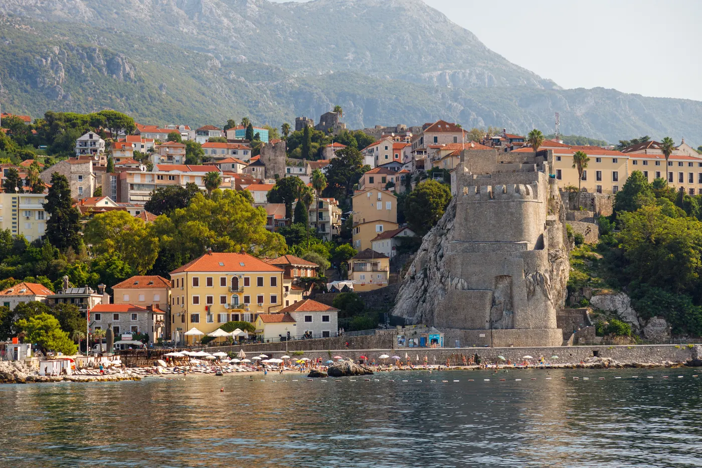
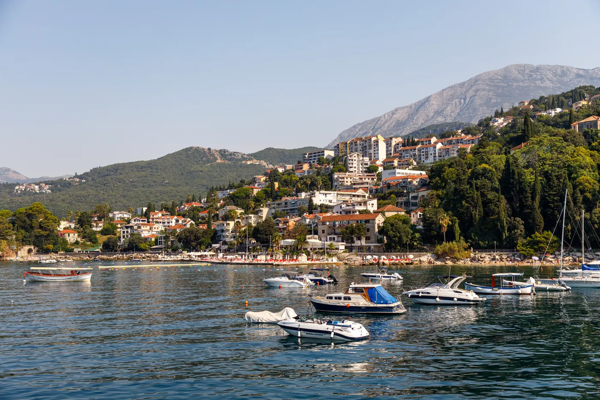

Vodiči / Herceg Novi
Herceg Novi — kad ići, aerodrom, šta obavezno vidi

Ovaj vodič je pisan za goste koji prvi put dolaze u Herceg Novi — grad na samom ulazu u Boku kotorsku, poznat po tvrđavama, stepeništima i mimozama koje cvetaju usred zime.
Kad doći u Herceg Novi — najbolje vreme za grad
Jul i avgust su najtopliji i najživlji meseci — more je idealno za kupanje, ali su i cene smeštaja i gužve najveće. Maj, jun i septembar nude prijatne temperature za kupanje uz manje turista i niže cene. Herceg Novi je poznat i po tome da je jedan od retkih gradova u Evropi gde krajem januara i tokom februara cvetaju mimoze — grad tada slavi Mimozafest, tradicionalnu smotru cveća, uz blagu mediteransku zimu bez snega.
Aerodrom i put do Herceg Novog
Najbliži aerodrom je Tivat (TIV), udaljen oko 28 km. Vožnja traje 40-50 minuta, bilo oko celog Bokokotorskog zaliva preko Risna i Kotora, bilo kraćim putem preko trajekta Kamenari-Lepetane. Redovan javni autobuski prevoz između aerodroma i grada je ograničen, pogotovo van letnje sezone, pa je taksi (oko 30-40€) ili unapred rezervisan transfer najpraktičnija opcija za direktan dolazak. Aerodrom Dubrovnik u Hrvatskoj je realna alternativa — sličan po udaljenosti (oko 1h vožnje), uz prelazak granice, i često sa više međunarodnih letova i nižim cenama karata.
Koliko košta izlazak u Herceg Novom — orijentacione cene
- Stari grad i tvrđave (Kanli Kula, Forte Mare) — šetnja je besplatna; unutar Kanli Kule leti se organizuju koncerti sa posebnim ulaznicama.
- Brodski izlet do Plave špilje i ostrva Mamula — 15-25€ po osobi, zavisno od dužine ture.
- Riblji ručak ili crni rižoto — 15-22€ po osobi u restoranu na obali.
- Kafa na šetalištu — 1,5-2,5€, znatno jeftinije nego u Kotoru ili Budvi.
Šta obavezno vidi u Herceg Novom za 2-3 dana
- Kanli Kula — najveća tvrđava u gradu, danas otvorena letnja scena sa pogledom na Staru varoš.
- Forte Mare — manja tvrđava tik uz more, jedna od najfotografisanijih tačaka grada.
- Šetalište Pet Danica — najduža morska šetnica u Crnoj Gori, proteže se kroz nekoliko primorskih naselja.
- Manastir Savina — mirno mesto malo iznad grada, sa panoramskim pogledom na zaliv.
- Plava špilja i ostrvo Mamula — poludnevni brodski izlet ka poluostrvu Luštica, obavezan za ljubitelje mora.

Gde jesti u Herceg Novom — lokalna kuhinja
Kao primorski grad, Herceg Novi se oslanja na sveže morske plodove — riblje čorbe, škampe na buzaru i crni rižoto sa sipom. Iz unutrašnjosti stiže njeguški pršut i sir, odlična kombinacija uz domaće maslinovo ulje. Grad je poznat i po mandarinama i drugim citrusima koji uspevaju zahvaljujući blagoj mediteranskoj klimi — u sezoni ih prodaju na svakom koraku. Restorani duž šetališta Pet Danica su najatmosferičniji za večeru uz pogled na zaliv, dok su cene nešto niže u ulicama malo dalje od same obale.
Skrivena mesta u Herceg Novom van glavnih ruta
- Žanjic i Mirišta — mirnije plaže na poluostrvu Luštica, do kojih se stiže brodom ili automobilom.
- Zelenika — susedno naselje sa dužom šetnicom uz more i manje turista nego centar.
- Njivice — mesto malo dalje od centra, poznato po tišim uvalama.
- Stepeništa Starog grada — bezbroj kamenih stepenica između terasa grada, odlične za fotografije bez gužve rano ujutru.
Praktični saveti pre puta
- Dokumenta — Crna Gora nije u EU niti u Šengenu; na granici (uključujući dolazak iz Hrvatske) se prolazi kroz graničnu kontrolu.
- Valuta — evro (€), iako Crna Gora nije u evrozoni; kartice se prihvataju u većini restorana, ali je dobro nositi keš za manje kafiće i pijace.
- Obuća — grad je izgrađen na terasama sa mnogo stepenica; udobna obuća je obavezna za duže šetnje.
- Sezonske gužve — jul i avgust donose najveće gužve na putevima oko Boke; ako putuješ autom, planiraj vreme za sporiju vožnju.